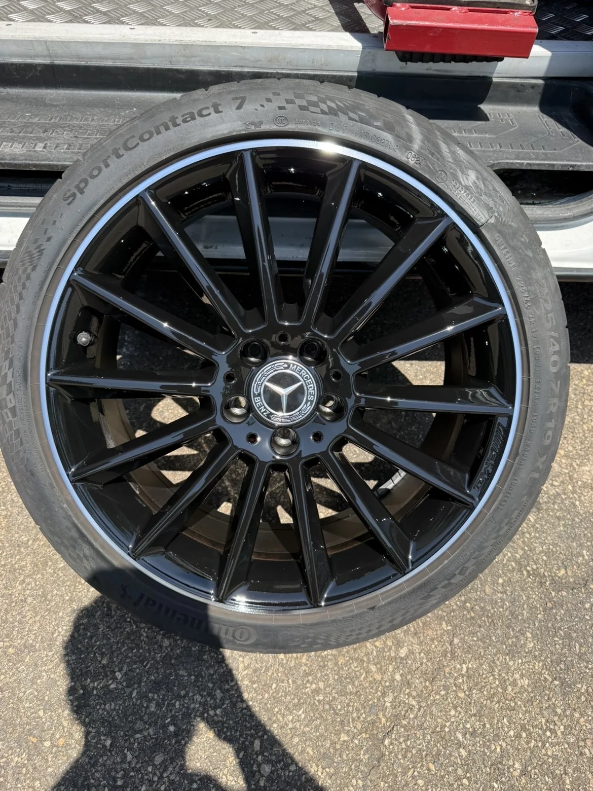

Finition premium
Jante diamantée
qui blanchit ou pèle
Le poli diamant offre l'un des rendus les plus élégants du marché — mais c'est aussi la finition la plus fragile face au sel et aux lavages. Vernis qui cloque, points blancs, aspect terni : on répare cette finition spécifique, par ré-usinage ou reprise en peinture selon l'état réel de vos jantes.

Pourquoi cette finition s'abîme plus vite. Le poli diamant expose une fine couche d'aluminium brut, protégée uniquement par un vernis. Dès que ce vernis se fissure — sel de déneigement, lavage haute pression trop proche, produit trop agressif — l'aluminium s'oxyde et blanchit. C'est une contrepartie connue de cet aspect miroir très recherché, pas un défaut de fabrication.
Deux méthodes
Ré-usinage
ou reprise en peinture
Selon l'état de la face usinée et le nombre de fois où la jante a déjà été reprise, on retient l'une des deux méthodes suivantes — on vous dit laquelle avant toute intervention.
Ré-usinage au tour à diamant
On retire une fine couche d'aluminium pour retrouver la face brillante d'origine — la méthode la plus fidèle au rendu constructeur, à condition que la jante n'ait pas déjà été usinée plusieurs fois.
Traitement anticorrosion
La zone oxydée est neutralisée avant toute reprise, pour éviter que la corrosion ne progresse sous la nouvelle protection.
Reprise en peinture effet diamant
Si le ré-usinage n'est plus possible, une base effet aluminium reproduit le rendu miroir sans usinage supplémentaire.
Vernis de protection UV
Un vernis bi-composant referme la finition et retarde la prochaine oxydation, quelle que soit la méthode retenue.
Ce qu'on répare
Les dommages pris en charge
Points blancs / poudre
Oxydation localisée sous le vernis — le signe le plus fréquent d'une finition diamantée qui commence à souffrir.
Vernis qui pèle
Le vernis se décolle par plaques, exposant l'aluminium brut à une oxydation accélérée s'il n'est pas traité rapidement.
Rayures sur la face polie
Un frottement de trottoir marque immédiatement la face miroir — plus visible que sur une finition mate ou brillante classique.
Aspect terni ou jauni
Un vernis vieillissant perd sa transparence et jaunit progressivement — la jante perd son éclat d'origine.
Autre besoin
Envie de passer
en finition diamantée ?
Si vos jantes ne sont pas encore diamantées et que vous souhaitez passer à cette finition, direction notre page personnalisation — le poli diamant y est l'une des options proposées, aux côtés du bi-ton et des couleurs sur-mesure.
À lire aussi
Questions fréquentes
Les questions
qu'on nous pose
Le poli diamant expose une fine couche d'aluminium brut protégée uniquement par un vernis. Dès que ce vernis se fissure ou s'use — souvent à cause du sel de déneigement ou des lavages agressifs — l'aluminium s'oxyde et forme des points blancs ou une poudre blanchâtre caractéristique. C'est la faiblesse connue de cette finition.
Oui, dans la grande majorité des cas. Selon l'état de la face usinée, on procède soit à un ré-usinage au tour à diamant pour retrouver la brillance d'origine, soit à une reprise complète en peinture avec effet diamant si le ré-usinage n'est plus possible.
Le ré-usinage retire une fine couche d'aluminium au tour à diamant pour retrouver la face brillante d'origine — c'est la méthode la plus fidèle, mais elle a ses limites si la jante a déjà été usinée plusieurs fois. La reprise en peinture applique une base effet aluminium et un vernis, pour un rendu très proche sans usinage supplémentaire.
Le tarif dépend de la méthode retenue et de la taille de la jante. Envoyez vos photos pour un devis gratuit sous 24 à 48 h — on vous indique la solution la plus adaptée à l'état réel de vos jantes.
Un rinçage régulier des jantes en hiver limite l'accumulation de sel. Éviter les produits de nettoyage trop agressifs ou acides préserve aussi le vernis. Mais aucune finition diamantée n'est totalement à l'abri — c'est une contrepartie connue de cet aspect miroir très recherché.
Votre jante diamantée
mérite d'être sauvée
Envoyez-nous des photos — diagnostic gratuit et réponse sous 24 à 48 h.
Voir aussi
Service 6j/7, de 9h à 19h. Déplacement inclus à Lyon et dans un rayon de 15 à 20 km, à partir de 3 jantes à Lyon, 4 autour ; atelier de Lyon sans minimum.